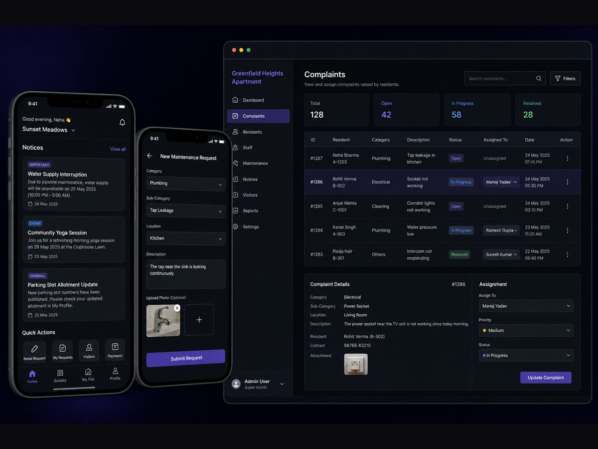
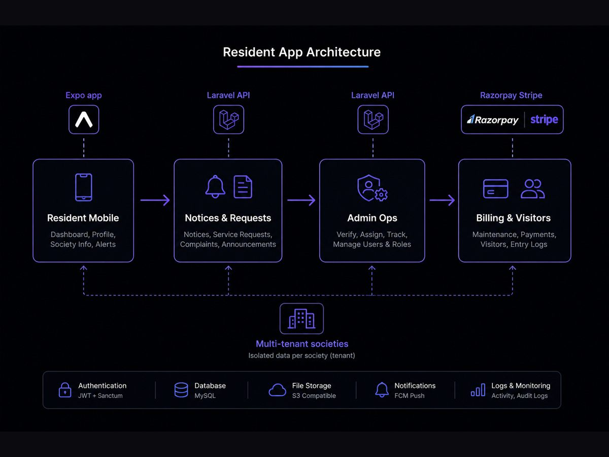

Resident App.
Multi-tenant housing society operations platform replacing chaotic WhatsApp groups and paper registers with structured notices, maintenance tickets, visitor QR verification, amenity booking, and automated dues billing.
 Illustrative Resident App society administration dashboard — representative sample data.
Illustrative Resident App society administration dashboard — representative sample data.
Structured community operations replacing chat chaos and paper logs.
Residential housing societies and gated communities frequently suffer from unstructured communication: important committee notices get buried in noisy WhatsApp groups, maintenance complaints get forgotten, visitor registers sit unverified at entry gates, and monthly dues collection requires tedious spreadsheet reconciliations.
Resident App was designed as an independent multi-tenant PropTech platform to unify these critical operations into role-specific, auditable web and mobile surfaces for residents, gate security personnel, and society committee members.
Full Product & Systems Architecture
As lead architect and developer, I owned the entire product stack — domain modeling, Laravel APIs, Inertia/React admin dashboards, and Expo mobile clients.
- Built resident workflows for official committee notices, maintenance ticketing with image uploads, amenity slot booking, invoice history, and AI support Q&A.
- Shipped operational tooling for society staff: ticket assignment, technician status tracking, gate visitor QR validation, emergency SOS alerts, and audit logs.
- Implemented database multi-tenancy using
stancl/tenancy, isolating data for each housing community while sharing a common codebase. - Configured cascading notifications (Mobile Push → SMS → Email) for urgent announcements and billing reminders.
- Engineered automated dues billing with monthly recurring invoice generation, late fee penalties, and dual payment support (Razorpay & Stripe).
Tenancy, Real-Time Ops & High-Trust Billing
- Replacing Chat Chaos with Structured Tracking: Non-technical residents need an interface as simple as a messaging app, while administrators require formal status state machines, technician accountability, and SLA resolution tracking.
- Cross-Platform Surface Parity: Society managers operate from wide desktop dashboards with batch spreadsheets and reports, whereas residents and security guards interact almost exclusively through handheld mobile devices.
- Bulletproof Tenancy & PII Safeguards: Housing communities handle sensitive residential data (tenant agreements, owner contact numbers, visitor vehicle records). Database schemas and middleware strictly quarantine each community’s records.
Resident Request to Staff Resolution.
Resident submissions flow through tenant middleware into assignment queues; committee updates notify residents via push and SMS while generating transparent audit records.
Society Operations Loop: Verified workflow path connecting resident tickets, staff assignment, technician work orders, and multi-channel alerts.
Core Platform Capabilities
Tenant Scoping & Billing Rails
Architected for scalable multi-community hosting:
- Multi-Tenancy via stancl/tenancy: Automatic domain/subdomain tenant detection isolating MySQL database queries by society ID.
- Dual Payment Infrastructure: Native Razorpay integration for Indian domestic cards, UPI, and net banking, paired with Stripe Cashier for global communities.
- Automated Ledger Engine: Monthly recurring billing generation, credit adjustment offsets, and automated PDF tax invoices.
Web Panels & Expo Mobile
Delivered tailored experiences for all community stakeholders:
- Admin Command Center: Inertia.js with React powering fast, single-page application speed with server-side routing clarity.
- Expo Native App: Cross-platform iOS and Android application with camera-based QR code scanning for security guards and instant notifications for residents.
- Role-Based Access: Spatie permissions gating treasurer financial controls, guard gate logs, committee approvals, and resident views.
Interfaces Built for Everyday Community Living.


Technology & Tooling.
A comprehensive PropTech SaaS platform delivered across three client surfaces (admin web, resident web, and Expo mobile). Demonstrates sophisticated architectural modeling for multi-tenancy, granular roles, automated recurring billing, and community operations.